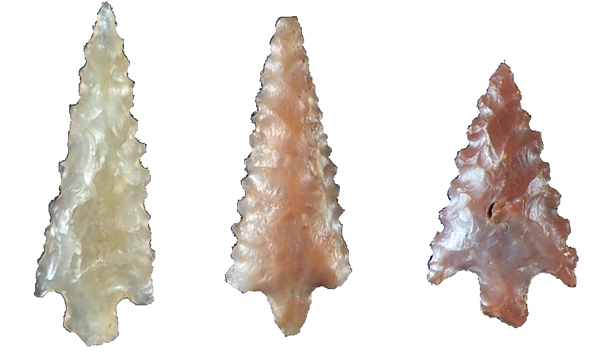

DI HU
Education
2016 Ph.D. in Anthropology, University of California, Berkeley. “Labor under the Sun and the Son: Landscapes of Control and Resistance at Inka and Spanish Colonial Pomacocha, Ayacucho, Peru” Dissertation compared the cultural lives of coerced laborers under Inka and Spanish colonialism and the long-term social conditions underpinning revolt and rebellion by the laborers in the late colonial period.
2009 M.A. in Anthropology (concentration in archaeology), University of California, Berkeley.
2007 B.A. in Anthropology and Political Science, University of Pennsylvania. Summa Cum Laude with distinction in Anthropology.
Key interests and areas of specialization
I use the lenses of political geography and landscape to develop a long-term understanding of political strategies of consolidation and control, bottom-up social movements, and identity transformation. I have particular area expertise in the Andes. I have researched early multi-community polity and state formation in the southern Titicaca Basin (Bolivia), and I currently focus on how state strategies of control and consolidation in the modern era, i.e. the last half millennium, were challenged in various ways by civil society.
Peer-reviewed publications
2006 Hu, Di. Experimental Roman Minting. EuroREA 3: 43–48. (reprint of PennScience article with additional information)
2005 Hu, Di. Experiments in Ancient Roman Coin Minting: Coins, Slaves, and Rebellion. PennScience 4(2): 6–11.
Reports
2016 Hu, Di and Alicia Miranda Alcántara. Informe Final del Análisis de los Restos Arqueológicos Exportados del Proyecto de Investigación de Pomacocha Colonial. Submitted to the Ministry of Culture, Lima, Peru.
2013 Miranda Alcántara, Alicia and Di Hu. Informe final del Proyecto de Investigación Arqueológica de Pomacocha Colonial. With Alicia Miranda Alcántara. Submitted to the Ministry of Culture, Lima, Peru.
2010 Hu, Di. Análisis de los artefactos líticos, In Excavaciones en Kala Uyuni:Informe de la Temporada 2009 del Proyecto Arqueológico Taraco, pp. 102-122. Submitted to the Unidad Nacional de Arqueología de Bolivia.
2008 Hu, Di. Spanish obrajes and the decline of Late Intermediate Period ethnic identities. Report submitted to the Center for Latin American Studies, University of California, Berkeley. http://www.clas.berkeley.edu/Research/graduate/summer2008/Hu/index.html
Other publications *=editorially-reviewed
2007 Ellis, Michael and Di Hu. Wonderlands: Through the Traveling Lens. Undergraduate Humanities Forum 2006-7: Travel, Penn Scholarly Commons. http://repository.upenn.edu/uhf_2007
2007 Hu, Di. Between the sword and the wall: Inca and modern Peruvian state strategies of control in Pomatambo-Vilcashuamán. Unpublished senior honors thesis, University of Pennsylvania. http://repository.upenn.edu/anthro_seniortheses/88/
Posters and Presentations
“War or peace? Assessing the rise of the Tiwanaku state through projectile point analysis.” with Christine Hastorf, Daniel Vera, Bruce Bradley, Karina Aranda, and Vanessa Jimenez. Paper presented at WAC-8, Kyoto, Japan, September 1st, 2016 . Session on flaked stone analysis in South America organized by Astolfo Araujo, Mercedes Okumura, and Bruce Bradley.
“Engaging historical archaeology through fiction: A ‘choose your own adventure.’” Society for American Archaeology Conference, Forum on “Performing the Past/Present” organized by Bryan Cockrell, Katie Chiou, Marguerite DeLoney, and Di Hu, San Francisco, CA, April 16th, 2015.
“The evolution of control and resistance at an Andean textile workshop 18th-19th centuries.” Paper presented at the 2014 Conference for Ford Fellows, UC Irvine, September 27th, 2014.
“Late colonial Andean revolts and rebellions: A view from the archaeology of labor and identity.” Paper presented at the Society for Historical Archaeology conference, Quebec City, Canada, January 10th, 2014.
“Changes in the materiality of language, landscape, and lithics in the Andes from the colonial era to the present.” Paper presented at the Society for American Archaeology conference, Honolulu, HI, April, 2013.
“How do Slaves and Forced Laborers Rebel? Archaeology provides insight in two case studies from ancient Rome and the Spanish colonial Andes.” Public lecture given at Berkeley Public Library, Berkeley, CA, January, 2013.
“A Perspective of Chincha Economics Through Their Ritual Lithics and Balance Beams.” Paper presented at the Institute for Andean Studies conference, Berkeley, CA, January, 2013.
“Weaving for the Sun and the Son: A Comparison of Inka and Spanish Colonial Labor Organization of Textile Production.” Paper presented at the Society for American Archaeology Conference, Sacramento, CA, March 2011. (Also presented at the Universidad Nacional San Cristóbal de Huamanga, November 24th, 2011 and at the Fulbright Commission – Lima, Perú November 25th, 2011)
“Clothing and constraint: The history of control and resistance in the textile workshops of Ayacucho, Peru.” Paper presented at UC Berkeley, Archaeological Research Facility November 17th, 2010.
“Ritual or Economic?: A Study of Chincha Scale Beams and ‘Scale Weights’.” Poster presented at the Society for American Archaeology Conference, St. Louis, MO, April 2010.
“Spanish Textile Workshops, Identity Transformation, and Revolts in colonial Ayacucho, Peru.” Paper presented at UC Berkeley, Archaeological Research Facility September 23rd, 2009 and at Stanford University, Stanford Archaeology Center October 28th, 2009.
“Archaeology and Ethics: The SAA Ethics Bowl, 2008.” With Margaret Conkey, Brandon Nida, Darren Modzelewski, and Kim Christensen. Paper presented at UC Berkeley, Archaeological Research Facility October 8th, 2008.
“Wonderlands: Through the Traveling Lens.” With Michael Ellis. Paper presented at Penn Humanities Forum conference on Travel, April 2007.
Fellowships
2014-2015 Ford Foundation Dissertation Fellowship
2012 Bancroft Library Study Award
2011 Fulbright-Hays Doctoral Dissertation Research Abroad Fellowship
2010-11 John L. Simpson Memorial Research Fellowship
2010 Dean’s Normative Time Fellowship, University of California Berkeley
2007-10 Berkeley Fellowship
2007 Fulbright IIE Fellowship (declined) for study of “Continuity and Discontinuity of Late Intermediate Ethnic Groups in Ayacucho, Peru.”
2007 Penn Humanities Forum Fellowship with Michael Ellis for research and photography exhibition entitled “Wonderlands: Through the traveling lens.”
2006 Native Voices-NSF Research Experience for Undergraduates Fellowship
2004 John Parker Science and Technology Wing Fellowship for “Experiments in Ancient Roman Coin Minting.”
Grants
2016 John Wymer Bursary, Lithic Studies Society
2014 Stahl Endowment Fund
2014 Department of Anthropology Block Grant
2014 Graduate Division Conference Travel Grant
2013 UC Berkeley Graduate Division Summer Grant
2013 Stahl Endowment Fund
2013 Graduate Division Conference Travel Grant
2010 Wenner-Gren Dissertation Fieldwork Grant #8265
2010 Lowie-Olson Fund for fieldwork in summer 2010
2008-10 Lowie-Olson Fund for conference travel.
2008 Center for Latin American Studies, Berkeley (Tinker Foundation), travel grant
2005 University of Pennsylvania College Alumni Research Grant for study on “Structural change in Roman coinage.”
Honors and awards
2014 2013 - 2014 Outstanding Graduate Student Instructor Award.
2008/2013 Society for American Archaeology Ethics Bowl, member of winning UC Berkeley team.
2009 NSF Graduate Research Fellowship, Honorable mention.
2009 Ford pre-doctoral fellowship, Honorable mention and alternate.
2007 Rose Award for Undergraduate Research, University of Pennsylvania, awarded for senior thesis, “Between the sword and the wall: Inca and modern Peruvian state strategies of control in Pomatambo-Vilcashuamán.”
2007 Department of Anthropology prize awarded for best thesis in anthropology.
2007 F. Parkes Weber Prize of the Royal Numismatic Society, awarded for “Experimental Roman Minting.”
2006 Junior year Phi Beta Kappa.
2006 Pi Sigma Alpha- Political Science Honor Society, University of Pennsylvania
Research experience
2016 Taraco Archaeological Project, Projectile point analysis, Chiripa, Bolivia. Directors: Maria Bruno and Christine Hastorf.
2008-2016 Archival and field research in Lima and Ayacucho, Peru, Berkeley, USA, London, UK, and Seville, Spain on Latin American obrajes. Archives consulted: Lima—Archivo Arzobisopal de Lima, Archivo General de la Nación, Archivo San Francisco de Lima, Biblioteca Nacional del Peru; Ayacucho—Archivo Regional de Ayacucho, Archivo Arzobisopal de Ayacucho, Ministerio de Agricultura de Ayacucho. Cuzco-Archivo Regional de Ayacucho; Seville—Archivo General de Indias; Berkeley—Bancroft Library; London—British Library.
2012 Participant, Proyecto Arqueológico Caracha Alta, Peru. Directors: Daniel Contreras, Nicholas Tripcevich, and Yuri Cavero.
2011 Co-director of the Proyecto de Investigación Arqueológica de Pomacocha Colonial, with Lic. Alicia Miranda Alcántara.
2009-12 Principal investigator for “Ritual or Economic?: A study of Chincha Scale Beams and ‘Scale Weights,’” under the direction of Christine Hastorf. Phoebe A. Hearst Museum, UC Berkeley.
2009 Taraco Archaeological Project, Lithic analysis, Kala Uyuni, Bolivia. Director: Christine Hastorf.
2007 Proyecto Arqueológico J’acha Machaca, Bolivia. Responsible for the excavation of two Late Intermediate Period domestic structures. Directors: John Janusek and Jennifer Zovar.
2006 Independent senior thesis research in Vilcashuamán province of Ayacucho, Peru. Advisor: Paula Sabloff.
2005 Intern at the University of Pennsylvania Museum of Archaeology and Anthropology, American Section. Researched Wari four-cornered hat with unusual iconography. Re-housed, catalogued, and photographed the Meso-American collection.
2005 Independent experimental archaeology research project on ancient Roman minting. Advisor: James Mathieu.
2004 Field school at Vineland, New Jersey. Excavated late 19th to early 20th century backyard household contexts. Director: Robert Schuyler.
2004 Participant, excavations of Nasca ceremonial center at Cahuachi, Peru. Director: Giuseppe Orefici.
Teaching experience
“English Academic Writing.” Hopkins-Nanjing Center, Nanjing, China (bilingual MA program in international studies run by Johns Hopkins University and Nanjing University). 2015-2017.
Co-Instructor, “Ancient World History: Approaches to World Archaeology,” taught with Bryan Cockrell and Kirsten Vacca. Prison University Project, San Quentin State Prison. Spring 2014.
Graduate Student Instructor, University of California, Berkeley.
-
“Introduction to Biological Anthropology.” Fall 2013, Fall 2014.
-
“Spatial Anthropology of Control and Resistance.” Sole designed and taught. Spring 2013.
-
“Introduction to Biological Anthropology.” Fall 2009, Spring 2010.
Graduate Student Reader, University of California, Berkeley. “Anthropology of Food.” Fall 2010.
Mentor, Undergraduate Research Apprentice Program, University of California Berkeley.
-
“Using GIS for archaeological analyses.” Student: Cristina Hernandez. Fall 2010.
-
“Learning to transcribe and do image processing on colonial Spanish documents” Student: Rene Goldfarb-Ilyashov. Fall 2010.
-
“Uncovering prehistoric values and measurement: A study of Chincha commerce and material organization through the study of scale weights.” Student: Caitlyn Sherman. Fall 2009.
Skills
Languages: English (fluent), Spanish (high proficiency), Chinese (intermediate proficiency), French (elementary proficiency).
Specialized archaeological skills: Lithic analysis, GIS, ED-XRF geochemical analysis (archaeometry), magnetometry (geophysical survey), balloon aerial photography, photogrammetry, experimental stone knapping, experimental minting.
Geospatial software proficiency: ArcGIS, DepthMap, AGRAPH, Gephi, Cytoscape.
Statistical software proficiency: R, JMP, PAST.
Other skills: Colonial Spanish paleography, Adobe Photoshop, HTML (Dreamweaver and coding), Art (sculpture and drawing).
Workshops/demos given
2015 Surname analysis using Lasker distance. Berkeley Institute for Data Science, Science Faire.
2012 Flint knapping and lithic production. Six participants from the University of San Cristóbal, Huamanga. Ayacucho Peru.
2012; 2014 Designing and conducting archival research. Hopkins-Nanjing Center.
Service
2014-2016 Webmaster and online media outreach director for Boxing Out Negativity youth mentoring program (North Lawndale Boxing League), Chicago, Illinois.
2014 Fundraising for and implementation of public library in Antonio Raymondi secondary school, Pomacocha, Ayacucho, Peru.
2013 Volunteer at the Asian Art Museum, San Francisco, for exhibition “Terracotta Warriors: The First Emperor.”
2011 Judge at the provincial traditional dance competition, Pucaraccay, Vilcashuamán.
2010 Science Fair Judge at Roots International Academy and Coliseum College Preparatory Academy.
2010-2014 Ad-hoc reviewer for Kroeber Anthropological Society, Cambridge Archaeological Journal, and Andean Past.
2008 Volunteer at the Asian Art Museum, San Francisco, for “Digging Archaeology”; designed and crafted mock artifacts for the dig kit.
2008-10 Archaeological Research Facility High School Outreach Program.
2007-2014 Archaeological Research Facility Outreach Program.
Professional memberships
Lithic Studies Society
World Archaeological Congress
 |